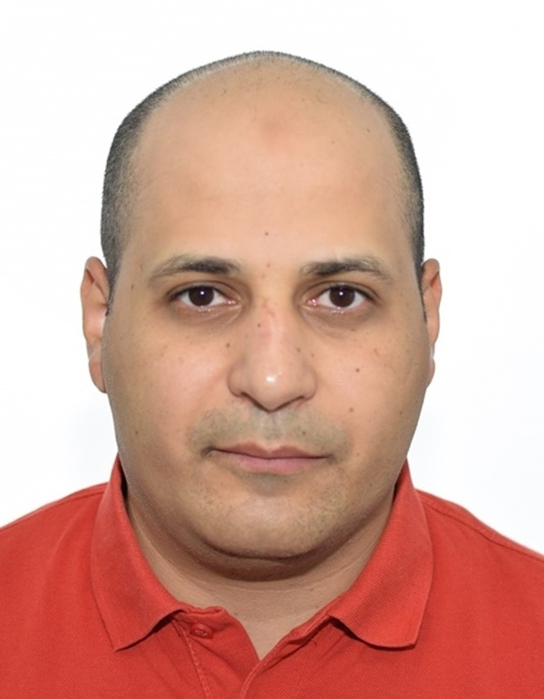
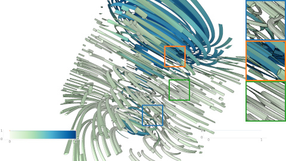
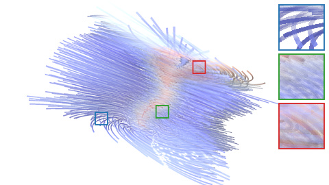
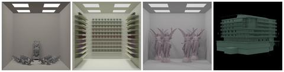
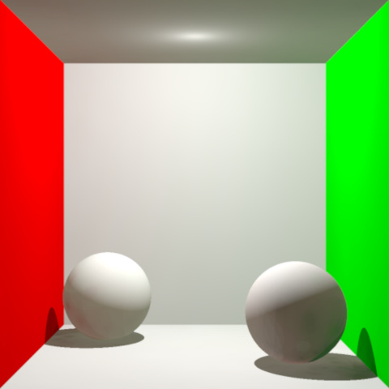
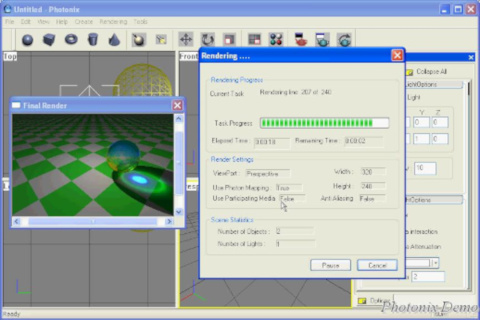

Research Scientist
Faculty of Computer and Information Sciences (FCIS)
Ain Shams University (ASU)
📧 mahmoud.zeidan@cis.aus.edu.eg
📧 zeidan.mahmoud@protonmail.com
📄 CV |
🔗 LinkedIn |
🎓 Google Scholar |
🧬 ORCID
🏛 KIT Profile
I recently defended my Ph.D. in December 2025 under the supervision of Prof. Dr.-Ing. Carsten Dachsbacher . I previously earned my M.Sc. (2011) and B.Sc. (2004) degrees from the Department of Computer Science, Faculty of Computer and Information Sciences, Ain Shams University, Egypt.
In Spring 2026, I will be co-teaching Computer Graphics at the Faculty of Computer and Information Sciences, Ain Shams University, together with Dr. Salsabil Elregaily.
|
 |
Mahmoud Zeidan, Christoph Peters, Tobias Rapp, and Carsten Dachsbacher. “Versatile Geometric Flow Visualization by Controllable Shape and Volumetric Appearance.” in Smart Tools and Applications in Graphics (STAG), 2022. Project page |
|
 |
Mahmoud Zeidan, Tobias Rapp, Christoph Peters, and Carsten Dachsbacher. “Moment-Based Opacity Optimization.” in Eurographics Symposium on Parallel Graphics and Visualization (EGPGV), 2020. Project page |
|
 |
Mahmoud Zeidan, Taymoor Nazmy, and Mostafa Aref. “GPU-based Out-of-Core HLBVH Construction.” in Eurographics Symposium on Rendering (EGSR) – Experimental Ideas & Implementation (EI&I), 2015. Project page |
|
 |
Zeidan, Mahmoud, Applying Parallel Processing Approach for Interactive Global Illumination, M.Sc. thesis, Ain Shams University, Egypt, July 2011. Project page |
|
 |
Zakaria, Ahmed, Zeidan, Mahmoud, and Hamdy, Ahmed, Photonix: A 3D Modeling Tool and Global Illumination Renderer using Photon Mapping, B.Sc. thesis, Ain Shams University, Egypt, July 2004. Project page |
I use art to complement my research in computer graphics and enjoy digital drawing in GIMP, Inkscape, Krita, Procreate, Clip Studio Paint, and 3D modeling in Blender.
My art profile on CARA